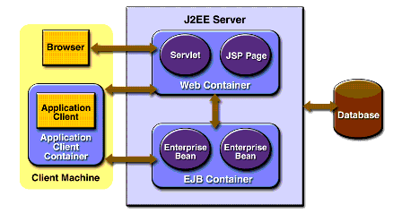

The Java EE (Enterprise Edition) platform (formly known as the J2EE platform) is used to develop distributed, multitiered client/server applications. There is a special aspect of this platform for developing web based enterprise applications. The overall idea is that by providing a powerful infrastructure, the less work the programmers need to do. By providing powerful APIs, programmers do not have to worry about certain aspects of their web based enterprise applications.
There are three components to any web based Java EE project and they will be described in their functions:
These components work together to form a distributed multitiered application that can be viewed on a variety of clients. The clients could either be java applications, applets, or a web browser.
The power of Java EE applications come in the way the business logic is contained on the server. The business logic is stored in containers or special areas on the server. If the client is not a web browser the application logic is stored on the client in the application container.

There are four different containers available through Java EE.
This diagram shows how containers work together. The web container contains all of the JSP and Servlets so that the browser is the client. The EJB container contains the business logic and is the go between the application container and the underlying Database. The application container contains the logic so that a java application can speak to the EJB container. The web container interacts with the EJBs in the same way that the application container interacts with the EJB container to ultimately interact with the underlying database.
The basic containers are stored on special servers called Java EE Servers. These servers provide the applications with the containers that they need to complete their purposes. They also provide the applications with a some security to the applications. Examples of these servers include the Tomcat Servlet Engine, Glassfish, JBOSS, and the Oracle Application Server.
It should be noted that the Tomcat Servlet Engine only provides web containers, but does not include the EJB Container.
An diagram of how a J2EE server works is below:
Sources:
Askesis . A J2EE Introduction. April 2002. 29 March 2009 <http://www.askesis.nl/en/tutorial/docs/J2EE/body.html#The%20J2EE%20Platform>.
Sun Microsystems. "J2EE Containers." 2003. The J2EE 1.4 Tutorial. 29 March 2009 <http://java.sun.com/j2ee/1.4/docs/tutorial/doc/Overview3.html>.